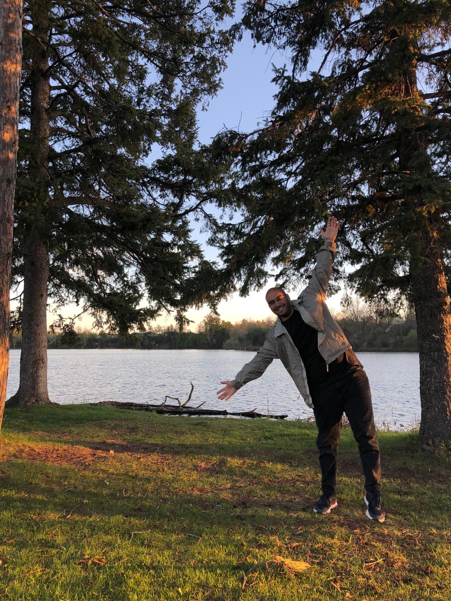
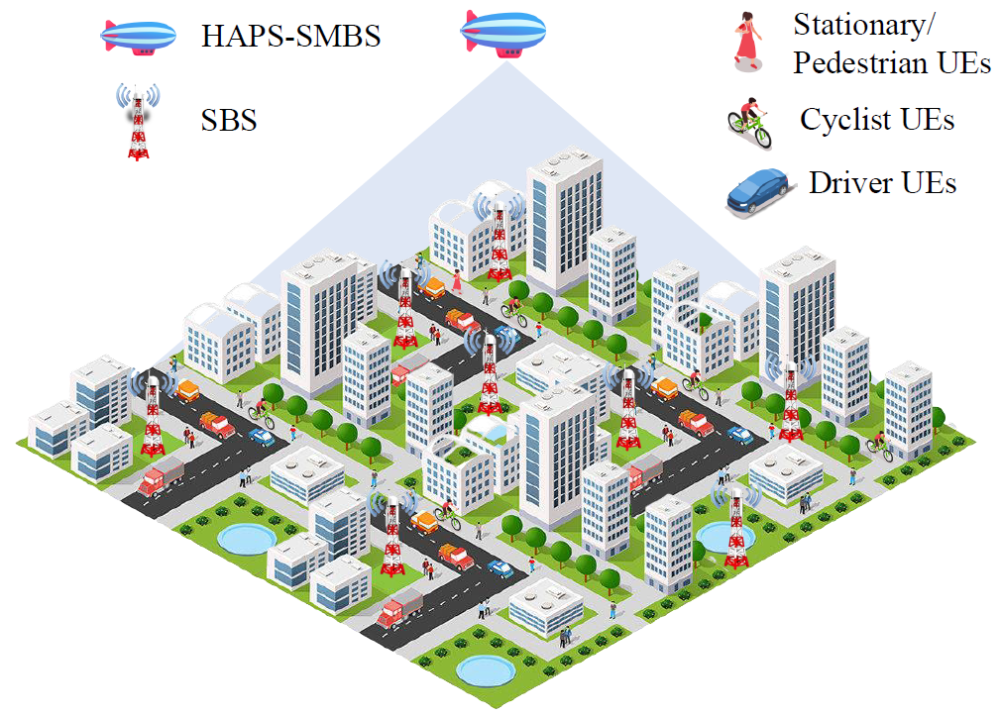

Welcome!

Hello! I am a researcher and currently an Assistant Professor, working on various aspects of wireless communication networks, with a special focus on non-terrestrial networks (NTN), sustainability, and artificial intelligence (AI) applications. Here, you can explore my most recent works and projects.
Announcements
• [18 June 2024] Our paper, titled "Cell Switching in HAPS-Aided Networking: How the Obscurity of Traffic Loads Affects the Decision," was accepted for publication at IEEE Transactions on Vehicular Technology.
• [14 June 2024] Metin Ozturk was a panelist on the theme of "Non-Terrestrial Networks for Sustainable and Intelligent 6G Networks" at the panel session titled "Technologies That Will Revolutionize 6G" during the xURLLC6G Workshop at IEEE ICC 2024.
• [14 June 2024] Metin Ozturk chaired a session at the IEEE International Conference on Communications (ICC) 2024, during the Workshop on Ultra High Data Rate Enabled Next Generation Hyper-Reliable and Low-Latency Communications for Futuristic 6G Networks (xURLLC6G).
• [24 May 2024] Metin Ozturk delivered a talk, titled "Sustainability in Wireless Communications: Can HAPS Be Instrumental?," in a webinar organized and hosted by Dr. Abdulkadir Köse from Computer Engineering, Abdullah Gül University, Kayseri, Turkiye.
About
Hello!
I received my Ph.D. degree from the James Watt School of Engineering, University of Glasgow, UK, and obtained my B.Sc. (in Electrical and Electronics Engineering) and M.Sc. (in Electronics and Communication Engineering) from Eskisehir Osmangazi University, Turkiye and Ankara Yildirim Beyazit University, Turkiye, in 2013 and 2016, respectively.
Currently, I’m working as a Visiting Professor/Post-Doctoral Fellow at Carleton University, Canada and an Assistant Professor of Telecommunications for Ankara Yıldırım Beyazıt University, Turkiye, where I previously worked as a Lecturer between 2020 and 2021, and as a Research Assistant between 2013 and 2016. My current research interest is sustainability in non-terrestrial networks (NTN)-assisted wireless communication networks.
I have authored/co-authored 40+ journal & conference papers as well as book chapters published at top-tier venues. We have received Workshop Best Paper Award in IEEE WCNC 2019.
I have been serving as guest editor, research topic editor, an academic reviewer for various high-class journals and conferences. We have also organized a workshop at IEEE-WCNC 2023, titled "AI-Enabled Network Orchestration: Design Challenges and Opportunities for 6G Networks."
I have also delivered several seminars, talks, and keynote speeches that helped me sharing experience with people from distintive backgrounds.
I am happily married and have one lovely kid.
Research

My resarch interests encompass various aspects of wireless networks, including:
- 6G and 5G networks
- Non-terrestrial networks (NTN)
- Artificial intelligence (AI) for communications
- Sustainability in wireless communication networks
- Cell-switching for energy efficiency in cellular communications
- Radio resource management
- High altitude platform station (HAPS) assisted cell switching in cellular networks
- Internet of things (IoT)
- Cognitive radio and opportunistic spectrum access
Publications
Total: 46 research items.
Breakdown:
• 20 journal papers: All are international and peer reviewed.
• 19 conference papers: All are peer-reviewed, full-text, and IEEE-related (either organized or sponsored).
• 7 book chapters: All are in international and well-established publishers.
Journal Publications
[J-20] Çağan, A. T., Koç, G. B., Yakın, H., Çiloğlu, B., Ashgar, M. Z., Ersoy, Ö., Hämäläinen, J. and Ozturk, M. (2024). UAV-based Maritime Communications: Relaying to Enhance the Link Quality. Physical Communication. (Under Review)
[J-19] Khennoufa, F., Abdellatif, K., Yanikomeroglu, H., Alfattani, S., Ozturk, M. and Kara, F. (2024). Two-Tier High Altitude Platform Stations (HAPS) for Exploring Wireless Energy Harvesting. IEEE Transactions on Wireless Communications. (Under Review)
[J-18] Abubakar, A., Mollel, M. S., Ozturk, M. and Ramzan, N. (2024). A Secured Energy Saving with Federated Assisted Modified Actor-Critic Framework for 6G Networks. IEEE Transactions on
Vehicular Technology. (Under Review)
[J-17] Ciloglu, B., Koc, G. B., Ozturk, M. and Yanikomeroglu, H. (2024). Cell Switching in HAPS-Aided Networking: How the Obscurity of Traffic Loads Affects the Decision. IEEE Transactions on Vehicular Technology. (Accepted on 18 June 2024)
[J-16] Abubakar, A., Mollel, M. S., Oniretti, O., Ozturk, M., Ahmad, I., Asad, S. M., Sambo, Y.,
Zoha, A., Hussain, S. and Imran, M. A. (2023). Coverage and Throughput Analysis of an Energy Efficient UAV Base Station Positioning Scheme. Computer Networks, 232, 109854.
[J-15] Abubakar, A., Ahmad, I., Omeke, K. G., Ozturk, M., Ozturk, C., Abdel-Salam, A. M.,
Mollel, M. S., Abbasi, Q. H., Hussain, S. and Imran, M. A. (2023). A Survey on Energy Optimization Techniques in UAV-Based Cellular Networks: From Conventional to Machine Learning Approaches. Drones, 7(3), 214.
[J-14] Abubakar, A., Ozturk, C., Ozturk, M., Mollel, M. S., Asad, S. M., Ul Hassan, N., Hussain,
S. and Imran, M. A. (2022). Revenue Maximization through Cell Switching and Spectrum Leasing in 5G Heterogeneous Cellular Networks. IEEE Access, 10, 48301-48317.
[J-13] Ozturk, M., Abubakar, A. I., Rais, R. N. B., Jaber, M., Hussain, S. and Imran, M. A.
(2022). Context-Aware Connectivity and Processing Optimization for IoT Networks. IEEE Internet of Things Journal, 9(17), 16028-16043.
[J-12] Abubakar, A. I., Mollel, M. S., Ozturk, M., Hussain, S. and Imran, M. A., (2022). A Lightweight Cell Switching and Traffic Offloading Scheme for Energy Optimization in Ultra-Dense Heterogeneous Networks. Physical Communication, 52, 101643.
[J-11] Atli, I., Ozturk, M., Valastro, G. C. and Asghar, M. Z. (2021). Multi-Objective UAV Positioning Mechanism for Sustainable Wireless Connectivity in Environments with Forbidden Flying Zones. Algorithms, 14(11), 302.
[J-10] Mollel, M. S., Abubakar, A. I., Ozturk, M., Kaijage, S., Kisangiri, M., Hussain, S., Imran, M. A. and Abbasi, Q. H. (2021). A Survey of Machine Learning Applications to Handover Management in 5G and Beyond. IEEE Access, 9, 45770-45802.
[J-09] Abubakar, A. I., Omeke, K. G., Ozturk, M., Hussain, S. and Imran, M. A. (2020). The Role of Artificial Intelligence Driven 5G Networks in COVID-19 Outbreak: Opportunities, Challenges, and Future Outlook. Frontiers in Communications and Networks, 1, 575065.
[J-08] Ozturk, M., Abubakar, A., Nadas, J. P.B., Rais, R. N. B., Hussain, S. and Imran, M. A. (2021). Energy optimization in Ultra-Dense Radio Access Networks via Traffic-Aware Cell Switching. IEEE Transactions on Green Communications and Networking, 5(2), 832-845.
[J-07] Omeke, K. G., Mollel, M. S., Ozturk, M., Ansari, S., Zhang, L., Abbasi, Q. H. and Imran, M. A. (2021). DEKCS: A Dynamic Clustering Protocol to Prolong Underwater Sensor Networks. IEEE Sensors Journal, 21(7), 9457-9464.
[J-06] Asad, S. M., Ansari, S., Ozturk, M., Rais, R. N. B., Zoha, A., Hussain, S., Abbasi, Q. H. and Imran, M. A. (2020). Mobility Management-Based Autonomous Energy-Aware Framework Using Machine Learning Approach in Dense Mobile Networks. Signals, 1 (2), 170-187.
[J-05] Mollel, M. S., Abubakar, A. I., Ozturk, M., Kaijage, S., Kisangiri, M., Zoha, A., Imran, M. A. and Abbasi, Q. H. (2020). Intelligent Handover Decision Scheme Using Double Deep Reinforcement Learning. Physical Communication, 42, 101133.
[J-04] Rizwan, A., Ali, N. A., Zoha, A., Ozturk, M., Alomaniy, A., Imran, M. A. and Abbasi, Q. H. (2020). Non-Invasive Hydration Level Estimation in Human Body Using Galvanic Skin Response. IEEE Sensors Journal, 20(9), 4891-4900.
[J-03] Ozturk, M., Gogate, M., Onireti, O., Adeel, A., Hussain, A. and Imran, M. A. (2019). A Novel Deep Learning Driven Low-Cost Mobility Prediction Approach for 5G Cellular Networks: The Sase of the Control/Data Separation Architecture (CDSA). Neurocomputing, 358, 479-489.
[J-02] Ozturk, M., Akram, M., Hussain, S. and Imran, M. A. (2019). Novel QoS-Aware Proactive Spectrum Access Techniques for Cognitive Radio Using Machine Learning. IEEE Access, 7, 70811-70827.
[J-01] Ozturk, M., Imran, M. and Jaber, M. (2018). Energy-Aware Smart Connectivity for IoT Networks: Enabling Smart Ports. Wireless Communications and Mobile Computing, 2018.
Conference Proceedings (Peer Reviewed & Full-Paper)
[C-19] Salamatmoghadasi, M., Ozturk, M. and Yanikomeoglu, H. (2024). Addressing the Load Estimation Problem: Cell Switching in HAPS-Assisted Sustainable 6G Networks. In IEEE Global Communications Conference (IEEE GLOBECOM) 2024. Cape Town, South Africa, 8–12 December
2024. (Under Review)
[C-18] Khennoufa, F., Abdellatif, K., Yanikomeroglu, H., Ozturk, M., Elganimi, T. and Kara, F. (2024). Multi-Layer Network Formation through HAPS Base Station and Transmissive RIS-Equipped UAV. In IEEE Global Communications Conference (IEEE GLOBECOM) 2024. Cape Town, South Africa, 8–12 December 2024. (Under Review)
[C-17] Koc, G. B., Ciloglu, B., Ozturk, M. and Yanikomeoglu, H. (2024). A Lightweight Machine Learning Approach for Delay-Aware Cell-Switching in 6G HAPS Networks. In IEEE International Conference on Communications (ICC) 2024, xURLLC6G Workshop. Denver, CO, USA, 09–13 June 2024.
[C-16] Ozturk, M., Ciloglu, B., Koc, G. B. and Yanikomeoglu, H. (2024). Multi-Tier Non-Terrestrial Networking for Disaster Communications: A Layered Clustering Approach. In IEEE Conference on Signal Processing and Communications Applications. Mersin, Turkiye, 15–18 May 2024.
[C-15] Cagan, A. T., Kaymak, O., Ersoy, O. and Ozturk, M. (2023). Enabling Smart Port Connectivity via UAV-IRS Assisted Relaying. In 2023 Innovations in Intelligent Systems and Applications Conference (ASYU-2023) (Sponsored by IEEE). Sivas, Turkiye, 11–12 October 2023.
[C-14] Koc, G. B., Ciloglu, B., Ozturk, M. and Yanikomeoglu, H. (2023). HAPS-enabled Sustainability Provision in Cellular Networks through Cell-Switching. In IEEE International Black Sea Conference on Communications and Networking (BlackSeaCom) 2023. Istanbul, Turkiye, 04–07 July 2023.
[C-13] Ashgari, M. Z., Ozturk, M. and Hamalainen, J. (2021). Reinforcement Learning Based Mobility Load Balancing with the Cell Individual Offset. In IEEE Conference on Vehicular Technology (VTC-Spring) 2021, ICNET Workshop. Helsinki, Finland, 25-28 April, 2021.
[C-12] Abubakar, A., Ozturk, M., Rais, R. N. B., Hussain, S. and Imran, M. (2020). Load-Aware Cell Switching in Ultra-Dense Networks: An Artificial Neural Network Approach. In International Conference on UK-China Emerging Technologies (UCET) 2020. Glasgow, United Kingdom, 20-21 August, 2020.
[C-11] Asad, S. M., Ozturk, M., Rais, R. N. B., Zoha, A., Hussain, S., Abbasi, Q. H. and Imran, M. A. (2019). Reinforcement Learning Driven Energy Efficient Mobile Communication and Applications. In IEEE International Symposium on Signal Processing and Information Technology (ISSPIT) 2019. Ajman, United Arab Emirates, 10-12 December 2019.
[C-10] Ozturk, M., Nadas, J. P.B., Klaine, P. H.V., Hussain, S. and Imran, M. A. (2019). Clustering Based UAV Base Station Positioning for Enhanced Network Capacity. In International Conference on Advances in the Emerging Computing Technologies (AECT 2019). Medina, Saudi Arabia, 08-10 December, 2019.
[C-09] Abubakar, A., Ozturk, M., Hussain, S. and Imran, M. (2019). Q-learning Assisted Energy-Aware Traffic Offloading and Cell Switching in Heterogeneous Networks. In IEEE 24th International Workshop on Computer Aided Modeling and Design of Communication Links and Networks (CAMAD) 2019. Limassol, Cyprus, 11-13 September 2019.
[C-08] Sambo, Y. A., Valastro, G. C., Patane, G. M. M., Ozturk, M., Hussain, S., Imran, M. A. and Panno, D. (2019). Motion Sensor-based Small Cell Sleep Scheduling for 5G Networks. In IEEE 24th International Workshop on Computer Aided Modeling and Design of Communication Links and Networks (CAMAD) 2019. Limassol, Cyprus, 11-13 September 2019.
[C-07] Patane, G. M. M., Valastro, G. C., Sambo, Y. A., Ozturk, M., Hussain, S., Imran, M. A. and Panno, D. (2019). Flexible SDN/NFV-based Testbed for 5G Mobile Networks. In IEEE/ACM International Symposium on
Distributed Simulation and Real Time Applications (DS-RT) 2019. Cosenza, Italy, 7-9 October 2019.
[C-06] Mollel, M., Ozturk, M., Kaijage, S., Kisangiri, M., Onireti, O., Imran, M. A. and Abbasi, Q. H. (2019). Handover Management in Dense Networks with Coverage Prediction from Sparse Networks. In IEEE Wireless Communications and Networking Conference (WCNC) 2019, uHSLLC Workshop. Marrakech, Morocco, 15-18 April 2019.
[C-05] Ozturk, M., Abubakar, I., Hassan, N. U., Hussain, S., Imran, M. A. and Yuen, C. (2019). Spectrum Cost Optimization for Cognitive Radio Transmission over TV White Spaces Using Artificial Neural Networks. In 4th International Conference on UK - China Emerging Technologies (UCET) 2019. Glasgow, UK, 21-22 August 2019.
[C-04] Turkmen, A., Mollel, M. S., Ozturk, M., Yao, S., Zhang, L., Ghannam, R. and Imran, M. A. (2019). Coverage Analysis for Indoor-Outdoor Coexistence for Millimetre-Wave Communication. In 4th International Conference on UK - China Emerging Technologies (UCET) 2019. Glasgow, UK, 21-22 August 2019.
[C-03] Ozturk, M., Valente Klaine, P. and Imran, M. A. (2018). Introducing a Novel Minimum Accuracy Concept for Predictive Mobility Management Schemes. In IEEE International Conference on Communications (ICC) 2018, 5G-UDN Workshop. Kansas City, MO, USA, 20-24 May 2018.
[C-02] Ozturk, M., Valente Klaine, P. and Imran, M. A. (2018). 3D Transition Matrix Solution for a Path Dependency Problem of Markov Chains-Based Prediction in Cellular Networks. In IEEE Conference on Vehicular Technology (VTC-Fall) 2017, BackNets Workshop. Toronto, Canada, 24-27 September 2017.
[C-01] Ozturk, M., Valente Klaine, P. and Imran, M. A. (2018). Improvement on the Performance of Predictive Handover Management by Setting a Threshold. InIEEE Conference on Vehicular Technology (VTC-Fall) 2017, BackNets Workshop. Toronto, Canada, 24-27 September 2017.
Book Chapters
[B-07] Ozturk, M. (2023). Long Distance Power Transmission. In M. A. Imran, A. Taha, S. Ansari, M. Usman and Q. H. Abbasi (Eds.), The Role of 6G and Beyond on the Road to Net-Zero Carbon (pp. 89–111). ISBN: 9781839537363. The Institution of Engineering and Technology (IET).
[B-06] Ozturk, M., Abubakar, A., Valente Klaine, P., Hussain, S., Abbasi, Q. H. and Imran, M. A. (2020). Cognitive Radio Spectrum Sensing: From Conventional Approaches to Machine Learning-based Predictive Techniques. In H. Arslan and E. Basar (Eds.), Flexible and Cognitive Radio Access Technologies for 5G and Beyond (pp. 481-512). ISBN: 978-1839530791. The Institution of Engineering and Technology (IET).
[B-05] Ozturk, M., Valente Klaine, P., Hussain, S. and Imran, M. A. (2020). Predictive Mobility Management in Cellular Networks. In M. Z. Shakir and N. Ramzan (Eds.), AI for Emerging Verticals: Human-Robot Computing, Sensing and Networking (pp. 135-155). ISBN: 9781785619823. The Institution of Engineering and Technology (IET).
[B-04] Imran, M. A., Ozturk, M., Abubakar, A. I., Valente Klaine, P., Hussain, S. and Abbasi, Q. H. (2019). Mobility Prediction Based Resource Management. In R. Tafazolli, C.-L. Wang and P. Chatzimisios (Eds.), Wiley 5G Ref: The Essential 5G Reference Online (pp. 1-18). ISBN 9781119471509. Wiley.
[B-03] Imran, M. A., Turkmen, A., Ozturk, M., Nadas, J. P. B. and Abbasi, Q. H. (2019). Seamless Indoor/Outdoor Coverage in 5G. In R. Tafazolli, C.-L. Wang and P. Chatzimisios (Eds.), Wiley 5G Ref: The Essential 5G Reference Online (pp. 1-18). ISBN 9781119471509. Wiley.
[B-02] Ozturk, M., Jaber, M. and Imran, M. A. (2019). Life-Span Extension for Sensor Networks in the Industry. In M. A. Imran, S. Hussain and Q. H. Abbasi (Eds.), Wireless Automation as an Enabler for the Next Industrial Revolution (pp. 19-45). ISBN 9781119552611. Wiley-IEEE Press.
[B-01] Rizwan, A., Ozturk, M., Ali, N. A., Zoha, A., Abbasi, Q. H. and Imran, M. A. (2020). Machine Learning for Decision Making in Healthcare. In R. Ghannam, M. A. Imran and Q. H. Abbasi (Eds.), Engineering and Technology for Healthcare (pp. 95-116). ISBN: 9781119644248. Wiley-IEEE Press.